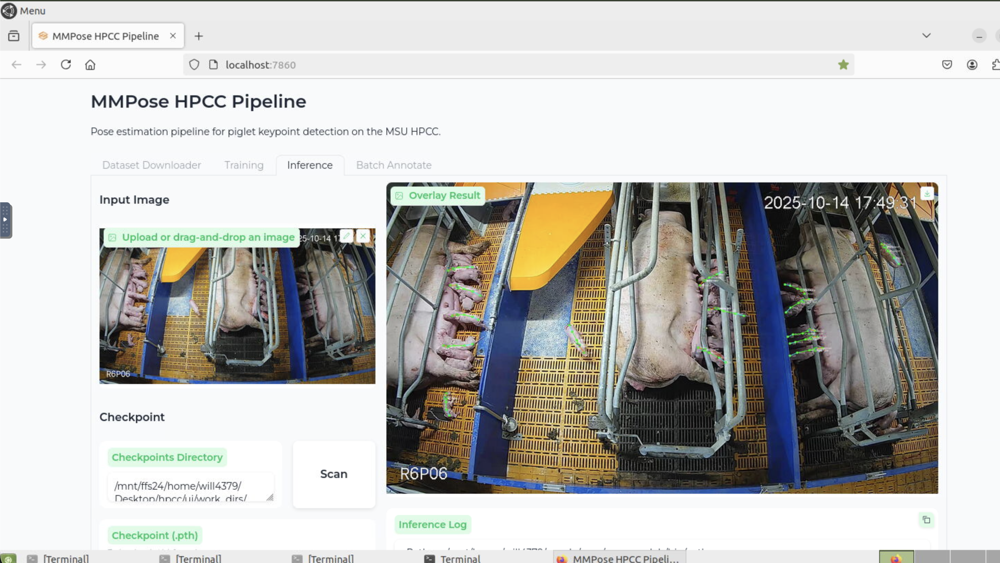

HPCC MMPose Annotation Workflow
Ubuntu-based software pipeline for keypoint annotation, dataset preparation, and MMPose training on the MSU HPCC

Project Overview
This project delivered a complete, reproducible software workflow for keypoint annotation and pose estimation model training using MMPose on the MSU High Performance Computing Cluster (HPCC). Developed on Ubuntu, the pipeline covers every step from raw image annotation through SLURM-submitted GPU training jobs.
The goal was to remove the manual friction from HPC-based deep learning work — environment setup on a shared cluster is notoriously brittle, dataset formats are inconsistent, and training jobs require careful SLURM configuration. This workflow automates and documents all of it, making the full pipeline reproducible for any future keypoint detection task in the lab.
Built during lab research (Jan–Mar 2026), this directly underpins the piglet pose estimation work and is designed to be reused for future animal or object keypoint datasets.
Pipeline Stages
- Environment Setup: Automated Conda environment creation with pinned MMPose, MMEngine, MMCV, and PyTorch versions compatible with HPCC's CUDA modules
- Image Annotation: Ubuntu-based annotation tooling for defining and labeling custom keypoint schemas on raw image datasets
- Dataset Conversion: Scripts to convert annotated data into COCO-format JSON required by MMPose, including train/val split generation
- Config Generation: Automated MMPose config file generation parameterized by dataset path, keypoint count, and model architecture
- SLURM Job Submission: Templated SLURM batch scripts for GPU training jobs with configurable resource allocation (CPUs, GPUs, memory, walltime)
- Training Monitoring: Log parsing and visualization scripts for tracking loss curves and validation metrics across epochs
- Inference & Visualization: Post-training scripts for running inference on new images with confidence-based keypoint overlay rendering
Workflow Architecture
📁 Data Preparation
- Raw Images
Transferred from Roboflow or local storage - Annotation Tool
Ubuntu GUI for keypoint labeling - COCO Converter
Python script → COCO JSON format
⚙️ HPCC Training
- Conda Environment
Pinned OpenMMLab stack on HPCC - MMPose Config
Auto-generated per dataset - SLURM Submission
GPU batch job with resource templates
📊 Outputs
- Trained Checkpoint
MMPose model weights (.pth) - Validation Metrics
PCK / AP scores per epoch - Visualizations
Keypoint overlays on test images
Technical Details
💻 Software Stack
- Ubuntu 22.04 (local development environment)
- MMPose (OpenMMLab) — pose estimation framework
- MMEngine + MMCV — training engine and CV utilities
- PyTorch + CUDA — GPU-accelerated model training
- Conda — environment and dependency management
- SLURM — HPC job scheduler on MSU HPCC
- Python + Bash — automation scripting
🖥️ HPC Details
- MSU HPCC — SLURM-managed cluster
- GPU nodes: NVIDIA A100 / V100 via SLURM allocation
- Module system for CUDA and cuDNN versions
- Shared filesystem for dataset and checkpoint storage
- Batch job walltime management for long training runs
🔑 Key Scripts
setup_env.sh— one-command Conda environment buildconvert_to_coco.py— annotation → COCO JSON conversiongen_config.py— parameterized MMPose config generatorsubmit_train.sh— SLURM batch job templatevisualize_results.py— inference + keypoint overlay renderingparse_logs.py— training metric extraction and plotting
Challenges & Solutions
OpenMMLab Version Compatibility on HPCC
Challenge: MMPose, MMEngine, MMCV, and PyTorch have tight interdependencies that frequently break when versions don't match. HPCC's available CUDA module versions further constrain the compatible package matrix, making naive pip install approaches fail.
Solution: Pinned a tested, working version matrix for all OpenMMLab packages against the HPCC CUDA 11.7 module. Documented the exact Conda environment spec as a environment.yml, allowing one-command reproducible setup across any HPCC user account.
COCO Format Dataset Generation
Challenge: MMPose requires datasets in COCO keypoint JSON format — a specific nested schema that annotation tools don't always export directly. Manual conversion is tedious and error-prone, especially for custom keypoint schemas that don't match standard COCO body joints.
Solution: Wrote a flexible convert_to_coco.py script parameterized by keypoint names and skeleton connectivity. The script handles arbitrary keypoint counts, generates proper category metadata, and validates the output JSON against MMPose's expected schema before training.
SLURM Job Configuration for GPU Training
Challenge: HPCC SLURM jobs require precise resource specification — wrong GPU count, memory, or walltime estimates lead to failed or inefficient jobs. First-time HPCC users in the lab had no starting point for deep learning job configuration.
Solution: Created templated SLURM batch scripts with sensible defaults for MMPose training workloads, with inline comments explaining each parameter. Included a small benchmark job to estimate per-epoch time before committing to a full training run.
Results & Impact
The pipeline was successfully used to train the 7-keypoint piglet pose estimation model (see Piglet Keypoint Detection), validating the end-to-end workflow on real research data.
- Full environment setup reduced from hours of manual troubleshooting to a single script execution
- COCO conversion handles arbitrary keypoint schemas — reusable for any future lab datasets
- SLURM templates successfully submitted and completed GPU training runs on HPCC A100 nodes
- Visualization pipeline confirmed correct keypoint predictions with confidence-based color coding
- Workflow documented and transferable to other lab members for future pose estimation tasks